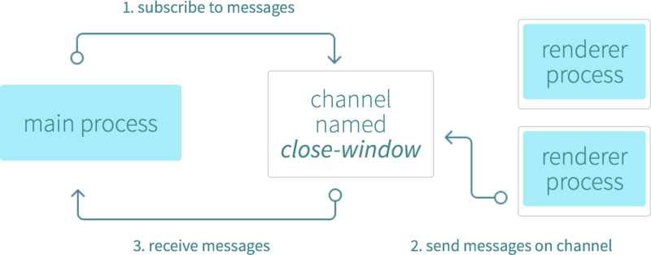

Developed by GitHub
Library for building cross-platform desktop applications with HTML, CSS, and JavaScript

differences
Google Chrome
- Colorful logo
- Reports crashes only if turned on. Please include symbolized backtraces in bug reports if you don't have crash reporting turned on.
- User metrics only if turned on
- Video and Audio codecs (may vary by distro)
- Sandboxed PPAPI (non-free) Flash plugin included in release
- Code is tested by Chrome developers
- Sandbox is always on
- Single deb/rpm package
- New releases are tested before being sent to users
- Google API keys are added by Google
Chromium
- Blue logo
- Does not ever report crashes. Please include symbolized backtraces in bug reports.
- User metrics are never reported.
- Video and Audio codecs (may vary by distro)
- Supports NPAPI (unsandboxed) Flash plugins, including the one from Adobe in Chrome 34 and below
- Code may be modified by distributions
- Sandbox depends on the distribution (navigate to about:sandbox to confirm)
- Packaging depends on the distribution
- New release testing depends on the distribution
- Google API keys depend on the distribution
Electron has since been used to create applications by companies like Microsoft, Facebook, Slack, and Docker.
appsVersion 1.0.0 released in May 09, 2016
Electron 1.0 represents a major milestone in API stability and maturity.
- Electron API Demos
- Devtron (open-source extension to the Chrome Developer Tools designed to help you inspect, debug, and troubleshoot your Electron app)
- Require graph that helps you visualize your app’s internal and external library dependencies in both the main and renderer processes
- IPC monitor that tracks and displays the messages sent and received between the processes in your app
- Event inspector that shows you the events and listeners that are registered in your app on the core Electron APIs such as the window, app, and processes
- App Linter that checks your apps for common mistakes and missing functionality
- Spectron (integration testing framework for Electron apps)
Main Process
In Electron, the process that runs package.json’s main script is called the main process. The script that runs in the main process can display a GUI by creating web pages.
Renderer Process
Since Electron uses Chromium for displaying web pages, Chromium’s multi-process architecture is also used. Each web page in Electron runs in its own process, which is called the renderer process.

ipc (inter-process communication)
- basic browser window instantiation
- remote messages between main and renderer process
- global keyboard shortcuts
- remotely creating native GUI elements and getting to know menus and tray icon
- packaging your application for Mac, Windows and Linux
webview Tag
Display external web content in an isolated frame and process.
- Runs in a separate process than your app
- Doesn’t have the same permissions as your web page
- All interactions between your app and embedded content will be asynchronous
Building app with electron-packager (npm module)
Supported Platforms:
- Windows (32/64 bit)
- OS X (also known as darwin) / Mac App Store (also known as mas)
- Linux (for x86, x86_64, and armv7l architectures)
electron-packager